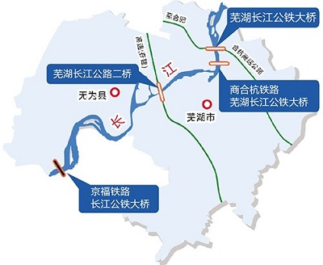
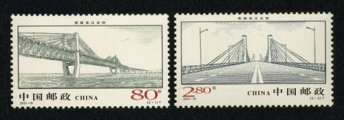

青弋江简介
青弋江简介青弋江，中国长江下游支流。古称"清水"、"泠水"或"泾溪"、"泾水"。唐及北宋时称青弋水。青弋江之名始自南宋。《宁国府志》记载："青弋江古名清水，一名泠水，又名清弋水。称其为清弋江，是因为它发源于黄山，会石台、太平、旌德、泾县诸水后，河身渐广，春暖水涨，波涛汹涌，故曰江。"
青弋江源出中国安徽省黟县黄山北麓，源头主河为清溪河（美溪河），经石台县、黄山区，于周家坦注入陈村水库（太平湖），出陈村水库流经泾县（此段原名施溪河）、宣城、南陵、芜湖等地，于芜湖市区入长江。安徽省志载：青弋江全长275千米，有大小支流30余条，流域面积8178平方千米，（芜湖市志（1999年版）、芜湖县志、南陵县志：在关门洲注入长江，全长291公里，有大小支流23条，流域面积4340平方公里）。是安徽省境内，也是长江下游最大的一条支流。
 芜湖段拓宽
芜湖段拓宽目前，全长7.5公里的芜(芜湖)申(上海)运河芜湖青弋江段拓宽工程进入尾声。芜申运河为古运河，西起青弋江入江口，经芜湖县、当涂、郎溪至江苏的高淳、溧阳、宜兴，穿太湖经太浦口在吴江市进入上海，全长271公里，常年可通航1000吨级船舶，改造完成后，从芜湖到太湖及上海的航程将缩短100多公里。
如图，挖掘机正在进行入江口清淤工作。

 芜湖长江大桥
芜湖长江大桥芜湖长江大桥是国家"九五"期间重点交通项目，工程规模居中国长江大桥之首。大桥采用低塔斜拉桥桥型，主跨312米，是中国迄今为止公、铁两用桥跨度最大的桥梁。大桥工程采用了10多项新技术、新结构、新材料、新工艺，大大提高了中国公、铁两用桥梁设计、制造、安装水平，有14项刷新了全国建桥记录，荣获2001年度中国建筑工程最高荣誉鲁班奖。
大桥采用大跨度连续钢桁梁斜拉桥式，首开中国公铁两用斜拉桥之先河，主跨312米，居国内公铁两用桥之最，建桥中采用低塔斜拉公铁桥，也是世界上首创；该桥为满足高速铁路运输，其荷载设计为中国公铁桥最大，铁路桥与公路桥荷载比为6：1，创国内公铁两用桥荷载比差之最；正桥钢梁首次采用中国最新研制的低碳中强钢——14锰铌钢，其屈服强度高于日本、德国同类桥梁，新钢种的开发利用，完善了中国桥梁钢系列；该桥水上基础施工中首次采用3米大孔径钻孔桩，成功攻克深水、动水、厚沙层钻孔难关，其孔径桩深创中国之最。
芜湖长江大桥，铁路桥长10624.4米，公路桥长6078.4米，是我国建桥史上工程量最大、投资最省、工期最短、科技含量最高和工程质量最优等多项"之最"的大桥,2000年如期建成通车。"2001—19"《芜湖长江大桥》特种邮票，一套2枚，把它的雄伟壮观的正面和侧面永远地镌刻了下来。在上述众多的大桥邮票中，这是我国第三套整套邮票记录一座大桥的邮票，也是不可多得的第二套雕刻版邮票。
商合杭铁路芜湖长江公铁大桥是国家规划建设商合杭铁路及芜湖城市道路跨江交通网络的重要组成部分。大桥从弋矶山下游约500米、汽车轮渡过江通道处跨江，东侧为芜湖市区，西侧为芜湖市滨江新城的鸠江区和无为县。大桥为公路在上、铁路在下的双层桥面布置，将同时搭载商合杭客运专线、芜湖市轨道交通1号线过江。
负责大桥设计的中铁大桥勘测设计院副总工程师易伦雄介绍说，商合杭铁路芜湖长江公铁大桥通行8车道公路与4线铁路，为主跨588米的斜拉桥。因军用机场航空限高，主塔高度只有一般斜拉桥的一半，因此是一座大小姊妹塔的矮塔斜拉桥，远离机场一侧主塔高、近侧矮一点，两个主塔均属于矮塔。按大塔承载范围推算相当于主跨700多米斜拉桥，因为是矮塔斜拉桥，其受力状态相当于正常塔高条件下主跨1000米左右的斜拉桥，因此其技术难度直追主跨1092米的沪通公铁两用桥。
码头前沿配有岸边桥式集装箱起重机、轨道式集装箱起重机、ST400A集装箱正面吊运机等大型专用设备多台；门座式起重机、浮式起重机等散货、件杂货装卸设备十几台；场地龙门起重机用于场地货物装卸。铁路专用线与芜铜、皖赣铁路相连，交通便利。目前已和世界上近60国家和地区建立了业务往来，每月开通内支线班轮和挂靠班轮90多艘次，涉及世界上最大的18家船公司，世界各地已有49家箱主落户芜湖港。能满足各类大宗散货、件杂货、大重件、集装箱的装卸、运输、仓储业务的需要，初步形成了集水路、公路、铁路联运、江海直达、国际班轮运输为一体的现代化外贸码头。 外贸码头实行24小时、一票制承诺服务。集装箱班轮装、卸船作业时间为每小时40自然箱。装、拆箱作业能力为每昼夜100自然箱。散货作业能力为每小时1500吨。
长江带动芜湖经济的发展。芜湖长江水上旅游开发有限公司成立于2012年3月，由芜湖旅游投资有限公司（国有投资）与上海宝英航运有限公司合资成立，注册资金5000万元，主要经营芜湖长江水上旅游项目，包括观光游船、游轮、邮轮、水上旅游集散中心、高级游艇俱乐部和水上娱乐活动等，力求将芜湖打造成为安徽乃至全国长江水上观光、休闲及娱乐的旅游圣地。目前，公司已投资1500万，在芜湖市滨江公园（芜湖市大剧院南60米）建设了120米岸线的旅游观光游船码头及配套设施，购置2艘皇家古风游船和1艘豪华游艇，并于2012年12月26日正式运营。


 问君能有几多愁？恰似一江春水向东流。
问君能有几多愁？恰似一江春水向东流。